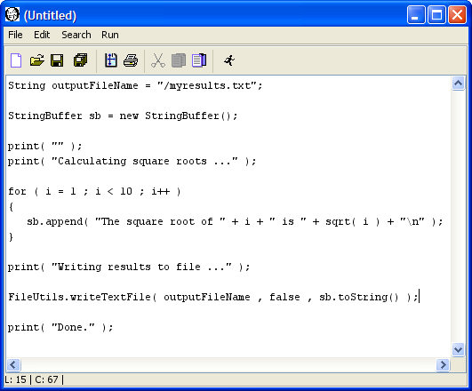
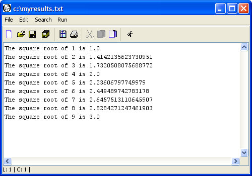

|
|
|
WordHoard uses the BeanShell scripting language as a base. BeanShell is an interpreter for a dialect of the Java programming language. As the BeanShell documentation notes, "BeanShell executes standard Java statements and expressions but also extends Java into the scripting domain with common scripting language conventions and syntax." For example, BeanShell allows loose type declarations. BeanShell also offers many of the Java 1.5 language extensions even when you are running WordHoard in a Java 1.4 runtime environment.
In addition to the large set of script functions provided by BeanShell, WordHoard scripting adds mathematical methods and utility methods. You may access data in the WordHoard database using the built-in WordHoard object model (see the javadoc for details). These scripting facilities allow you to author analytic procedures to extend the functionality of WordHoard.
If you are not familiar with Java, Sun offers a useful set of tutorials.
While it is possible to use AWT or Swing objects and methods in WordHoard scripts, we advise against this unless you are an experienced Java AWT/Swing programmer. Each WordHoard script runs on its own thread, requiring careful synchronization with the AWT event thread when you use AWT/Swing methods. If you don't know what that means, you should not try to use AWT or Swing in scripts. WordHoard does provide a couple of Swing-based utility methods (e.g., addResults, createTable). These methods handle thread synchronization for you.
Please be careful when you use scripts. A script has access to anything on your computer for which you have the requisite access privileges. It is possible to write a script to delete or modify important system files, for example. You should not run scripts written by people you don't know without carefully examining such scripts for possible deleterious actions.
You may enter script commands directly into the input pane of the WordHoard calculator window. This is a handy way to perform short arithmetic calculations. To display the Calculator window, select "WordHoard Calculator" from the Windows menu. For example, to calculate and print the square root of ten you could write:
The output resulting from the "print" command also appears in the Calculator input pane. You'll see how to route output to a new WordHoard window later on. You can print the Calculator window output by selecting "Print" from the "File" menu. You can save the output to a file by selecting "Save as" from the File menu. You can use the "Select all" and "Copy" commands to copy the Calculator output to the system clipboard for export to other programs. You can clear the Calculator output by selecting "Clear" from the "Edit" menu.
Entering script commands one at a time in the Calculator window best suited to short calculations. For more complicated scripts, you can create a text file containing multiple script commands using your favorite text editor. Save the script text as a plain text file with a ".bsh" extension. To execute your script, select the "Run a script" item from the "File" menu. WordHoard will prompt you for the location of the script file and attempt to execute the script file you select. The output of "print" commands still appears in the WordHoard Calculator input pane, just as if you have typed the script commands individually.
You may also use the built-in WordHoard text editor by selecting the "Editor" entry from the "File" menu. This brings up an editor window allowing for very simple text editing operations, sufficient for writing a script. You may select the "Run" menu item in the Editor window to run the script text without saving it to a file first. That allows you to iteratively develop a script without the hassles of saving the file for every change you make. As an example, open a WordHoard Editor window and enter the same script command used above to print the square root of ten.
Select "Run" from the Editor menu. You'll see the same output in the Calculator window as appeared when you entered the script command directly at the Calculator input prompt.
Now clear the Calculator window output by selecting "Clear" from the "Edit" menu. Let's extend the one-line script to find the square root of ten to find the square roots of each of the integers from one through ten. The script commands for this are:
Selecting "Run" from the Editor menu produces the following output in the Calculator window:
The sample script above uses the print method to display its output in the Calculator window. You can route the output to a new WordHoard window instead by using the addResults method. The addResults method takes three arguments:
For this example, we use "Square roots" as the WordHoard window title and "Square roots of integers from one through ten" as the subtitle. We accumulate the output results in one long string using the standard Java StringBuffer class.
Selecting "Run" from the Editor menu creates a new WordHoard window with the results:
How do you decide between displaying script output in the WordHoard Calculator window, and displaying script output in a new WordHoard window? If the output is short, and just plain text, using print to show the output in the WordHoard calculator pane is reasonable. If the output is long, or you want to display the output as other than plain text (e.g., in a Swing table), use addResults to display the output in a separate WordHoard window. For a long-running script, you may want to use print to display progress messages in the WordHoard Calculator window, and route the actual script output to a new WordHoard window.
You can also use standard Java commands to write the output to a file. Let's modify the script above to do that.

Selecting "Run" from the Editor menu creates a new WordHoard window with the results:
You can now open the file "/myresults.txt" with a text editor, such as the WordHoard editor. You'll see the same results as appeared when you wrote the output to the WordHoard Calculator pane.

|
|
|